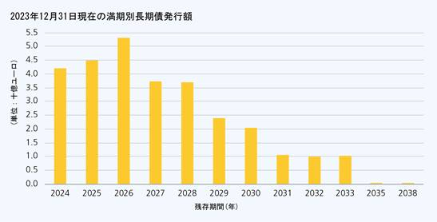

h. 2023年におけるCEBの財務活動
2022年を特徴付けた国際金融市場における不安定かつ幾分困難な運営環境は、2023年も続いた。欧州での平均インフレ率は、主にエネルギー価格の下落を反映して緩和したが、基調的な物価圧力は根強く、金利は高水準を維持した。これらの制約的な状況にもかかわらず、CEBは、満期債務の返済を行い、また流動性を確保しつつ、当行の活動に必要な資金確保を行うことができた。
ⅰ 財務ポートフォリオ
当行の貸借対照表の資産の部には、以下の１種類の金融ポートフォリオ及び３種類の短期、中期及び長期流動性有価証券ポートフォリオを含む４種類の財務ポートフォリオが計上されている。
・金融ポートフォリオは、１年満期までの短期私募債で構成される。
このポートフォリオは、全ての必要な通貨の日々のキャッシュ・フローを管理することを目的としている。３ヶ月満期までの短期私募債は、購入時に、最低BBB+の格付を取得していなくてはならない。３ヶ月満期から１年満期までの短期私募債は、購入時に最低A-の格付を取得していなくてはならない。
2023年12月31日現在、かかるポートフォリオの短期私募債総額は、6,365百万ユーロであった。
・短期流動性有価証券ポートフォリオは、１年満期までの短期有価証券で構成される。
銀行預金の代替に、これらの有価証券は当行の短期流動性ポジションの強化により、金融ポートフォリオを補完する。３ヶ月満期までの短期国債は、購入時に最低BBBの格付を取得していなくてはならず、３ヶ月満期から１年満期までの短期有価証券は、最低A-の格付を取得していなくてはならない。
2023年12月31日現在、かかるポートフォリオにおける短期有価証券総額は、1,150百万ユーロであった。
・中期流動性有価証券ポートフォリオは、１年満期から15年満期までの投資有価証券で構成される。
かかるポートフォリオは、満足のいく利回りを達成する一方で、当行の流動性ポジションを強化することを目的としている。中期有価証券は、購入時に最低A+の格付を取得していなくてはならない。
2023年12月31日現在、かかるポートフォリオにおける有価証券総額は、1,840百万ユーロであった。
・長期流動性有価証券ポートフォリオは、１年満期から30年満期までの投資有価証券で構成される。
かかるポートフォリオの有価証券は、当行の金利収入の安定的な資金源を確保することを主な目的としている。かかるポートフォリオの有価証券は、購入時に最低A+の格付を取得していることが要求される。
2023年12月31日現在、かかるポートフォリオにおける有価証券総額は、1,781百万ユーロであった。
ⅱ デリバティブ
CEBの管理委員会が採用する金融及びリスク方針に従い、当行は貸付、投資及び資金調達取引から生じる市場リスクをヘッジするためにデリバティブを使用する。
2023年12月31日現在、当行が所有するヘッジ対象の種類別のデリバティブの内訳は、債券発行が60％、貸付が34％及び有価証券が４％であった。
これらの各金融商品に特有のリスクを避けるため、当行は、厳格なリスク管理方針を実施しており、その原則の概略は、下記「(５)経理の状況」の注Bに記載されている。
ⅲ 2023年の資金調達
(a) 債券の発行
管理委員会が設定した年間借入承認に従い、CEBは、国際資本市場において債券を発行する。当行は、2023年において総額6.98十億ユーロ又は借入承認額７十億ユーロのうち99.7％を借り入れ、過去最高の借入額となった。かかる金額は、満期が１年以上の29件の資金調達活動(2000年以降で最多)及び過去最高の９種類の通貨で調達された。資金調達額は、5.99十億ユーロ借り入れた2022年を１十億ユーロ上回った。2023年の資金調達活動は、以下の３つの主要な目標を達成した。
・当行の貸付活動の需要を満たすこと
・当行の満期債務の返済を可能にすること
・当行の流動性を管理委員会が定める水準に維持できるようにすること
活動資金の調達に必要な資金源を確保するために、当行は継続して、大規模な、いわゆる広範な機関投資家を対象とした主要通貨建の指標銘柄に、特定の通貨でのより小規模な債券の発行又は投資家の特殊な需要に応えるために設計されたストラクチャーを組み合せている(1)。
2023年、CEBが調達した資金の45.8％がユーロ建、26.4％が米ドル建、15.6％が英ポンド建、3.3％が香港ドル建、３％がカナダドル建、2.9％がスイスフラン建、1.8％がトルコリラ建、0.8％がスウェーデンクローナ建、0.4％が豪ドル建であった。これらの取引により、当行は、当行の活動の資金調達先の市場を多角化するとともに、投資家基盤を拡大することができた。
CEBは暦年で初めて、ユーロ及び米ドル市場全体で、１十億ユーロ又は１十億米ドルの指標銘柄を５件(ユーロ３件、米ドル２件)発行した。ユーロ建では、2023年において、１月に発行された10年満期の１十億ユーロ指標銘柄、４月に発行された７年満期のソーシャル・インクルージョン・ボンド・ベンチマーク(１十億ユーロ)、９月に発行された５年満期の１十億ユーロ指標銘柄を含む７件の銘柄が発行された。さらに、2023年において、５年満期の１十億米ドル指標銘柄が１月に発行、また３年満期のソーシャル・インクルージョン・ボンド・ベンチマーク(１十億米ドル)が５月に発行された。
英ポンド建では、2023年において、１月に発行された長期３年満期の500百万英ポンド指標銘柄、９月に再発行された３年満期の250百万英ポンド銘柄を含む６件の銘柄が発行された。これにより、2023年において、ユーロ、米ドル及び英ポンド市場は、最も重要な資金調達量を占めた。
さらに、CEBはソーシャル・インクルージョン・ボンド・ラベルを新たに３通貨(スウェーデンクローナ、カナダドル、豪ドル)に拡張した。また当行が2014年以来初となる、６年満期の200百万スイスフラン銘柄を2023年６月に発行したことも注目すべき点である。
全体として、CEBは2023年に2.3十億ユーロのソーシャル・インクルージョン・ボンドを発行したが、これは新記録であり、当行の会計年度としては過去最高額となった。
スワップを行った後、借入資金は全額ユーロ建となった。2023年の借入承認に基づいて実施された起債の満期の平均は、5.4年であり、2022年とほぼ同水準であった。下表は、資金調達の詳細を原通貨建で示している。
2023年に発行された債券
|
払込日 |
満期日 |
通貨 |
期間 |
額面価額 |
主幹事会社 |
|
2023年１月11日 |
2026年３月16日 |
GBP |
３年 |
500 |
バンク・オブ・アメリカ(BoA)/ナットウェスト(NatWest)/カナダ・ロイヤル銀行(RBC) |
|
2023年１月17日 |
2033年１月17日 |
EUR |
10年 |
1,000 |
BoA/シティバンク(Citi)/クレディ・アグリコル・コーポレート・アンド・インベストメント・バンク(CACIB)/ドイツ銀行(DB) |
|
2023年１月26日 |
2028年１月26日 |
HKD |
５年 |
500 |
香港上海銀行(HSBC) |
|
2023年１月26日 |
2028年１月26日 |
USD |
５年 |
1,000 |
バークレイズ(BARC)/BNPパリバ(BNPP)/ゴールドマン・サックス(GS)/RBC |
|
2023年２月９日 |
2027年４月９日 |
EUR |
４年 |
75 |
ラボバンク(RABO) |
|
2023年２月17日 |
2027年３月10日 |
EUR |
４年 |
50 |
RBC |
|
2023年２月21日 |
2028年１月24日 |
EUR |
５年 |
50 |
コメルツ銀行(COBA) |
|
2023年２月27日 |
2026年２月14日 |
TRY |
３年 |
565 |
JPモルガン(JPM) |
|
2023年２月27日 |
2028年１月24日 |
EUR |
５年 |
25 |
ナティクシス(Natixis) |
|
2023年２月28日 |
2027年２月28日 |
TRY |
４年 |
500 |
モルガン・スタンレー(MS) |
|
2023年３月３日 |
2027年９月３日 |
TRY |
５年 |
535 |
JPM |
|
2023年３月６日 |
2028年３月６日 |
TRY |
５年 |
500 |
BNPP |
|
2023年３月16日 |
2027年３月16日 |
HKD |
４年 |
500 |
HSBC |
|
2023年３月13日 |
2027年３月22日 |
TRY |
４年 |
500 |
DB |
|
2023年４月13日 |
2030年４月13日 |
EUR |
７年 |
1,000 |
HSBC/アイエヌジー(ING)/ソシエテ・ジェネラル(SG)/TD証券(TD) |
|
2023年５月５日 |
2027年５月５日 |
HKD |
４年 |
400 |
BoA |
|
2023年５月５日 |
2028年５月５日 |
SEK |
５年 |
650 |
スウェドバンク(Swedbank) |
|
2023年５月15日 |
2027年７月22日 |
GBP |
４年 |
50 |
サンタンデール銀行(Santander) |
|
2023年５月17日 |
2027年５月10日 |
GBP |
４年 |
50 |
DB |
|
2023年５月25日 |
2026年５月25日 |
USD |
３年 |
1,000 |
CACIB/ナットウエスト・マーケッツ(NWM)/MS/ニューモラ・セラピューティクス(NMRA) |
|
2023年６月30日 |
2029年６月30日 |
CHF |
６年 |
200 |
BNPP/COBA |
|
2023年７月５日 |
2027年７月５日 |
HKD |
４年 |
300 |
TD |
|
2023年７月13日 |
2027年１月13日 |
CAD |
４年 |
300 |
ノヴァ・スコシア銀行(Scotia)/RBC/バンク・オブ・モントリオール証券株式会社(BMO)/カナダ帝国商業銀行(CIBC) |
|
2023年７月17日 |
2027年１月４日 |
HKD |
３年 |
250 |
BoA |
|
2023年９月13日 |
2028年９月13日 |
EUR |
５年 |
1,000 |
BoA/DZ銀行(DZ)/JPM/Natixis |
|
2023年９月27日 |
2026年９月15日 |
GBP |
３年 |
250 |
RBC/Citi/BARC |
|
2023年10月12日 |
2038年10月12日 |
AUD |
15年 |
40 |
大和証券(Daiwa) |
|
2023年11月23日 |
2026年９月15日 |
GBP |
３年 |
50 |
Santander |
|
2023年11月24日 |
2026年３月16日 |
GBP |
２年 |
50 |
モントリオール銀行(Bank of Montreal) |
2023年に借入プログラムに基づいて実施された起債のうち、63.4％が約５年以上の最終満期であり、2022年の61.3％からわずかに増加した。これにより、当行貸付金の借換を確保し、次期年度におけるキャッシュギャップを回避することができる。
多通貨、ミディアムタームノート(MTN)プログラムは、2023年12月に更新された。このプログラムは、２つの追加指標レートを参照する債券の発行を可能にし、1933年米国証券法の規則144Aに基づきカナダ及び米国の投資家に対する私募を行うオプションを含めるため、文書を金融市場の規制の変更に適応させたものである。豪ドル及びニュージーランド・ドルMTN(オーストラリアのプログラム)は、2015年９月に最後に更新された。ソーシャルボンド原則に沿ったICMAのソーシャル・インクルージョン・ボンドの枠組みは、2022年３月に更新され、収益の管理がポートフォリオ手法へと移行され、CEBのユーロ・コマーシャル・ペーパープログラムも、2023年12月に更新された。
注(1) 指標銘柄とは、大規模な発行を意味している。ユーロ又は米ドル市場では、指標銘柄は通常１十億ユーロ又は１十億米ドル以上の規模であり、英ポンド市場では250百万英ポンド以上の取引が指標銘柄とみなされる。
(b) 債券の傾向
2023年12月31日現在、支払利息を除いた有価証券に表章される債券の未償還額は、28.9十億ユーロとなり、前年度末の25.9十億ユーロから増加した。
2023年、当行は、長期債の買戻し、期限前償還を一切行わなかった。満期ごとの債券の内訳は、下記図表のとおりである。

詳細について
CEBの財務活動に係る詳細については、「(５)経理の状況」を参照のこと。
i. リスク管理
リスク管理の主要な目的は、当行の長期的な財政の持続性及び業務の弾力性を確保し、さらにはCEBがその社会的使命を遂行できるようにすることである。当行は国際的にも最良の銀行慣行を実践し、業務分野全体で健全かつ慎重なリスク文化を促進している。
ⅰ リスク管理
(a) 目的
リスク管理の主要な目的は、当行の長期的な財政の持続性及び業務の弾力性を確保し、さらにはCEBがその社会的使命を遂行できるようにすることである。リスク管理により、当行が通常の業務の過程において直面する主要な金融リスク、すなわち信用リスク、市場リスク、流動性リスク及びオペレーショナルリスクに対するエクスポージャーが特定、評価、監視、報告、軽減及び統制される。
(b) 原則
リスク管理原則及び枠組みの基準として、CEBは、銀行規制に係る欧州指令、バーゼル銀行監督委員会の勧告及び多国間開発銀行の地位に基づく国際的な最良の銀行慣行を適用している。
当行は、当行の活動から生じるリスクを管理するためにCEBが適切な手段を取れるように、目的、方針、手続、制限及び統制を含む包括的なリスク管理の枠組みを発展させ、実施してきた。かかる枠組みは、健全な要件との整合性を保証し、当行のガバナンスにおいて重要な意味を持つビジネス活動部門、リスク部門及び内部監査部門という３つの防衛線によって明確化されている。
CEBのリスク管理の構造は、リスク管理憲章で定義されており、重要なリスク管理原則を成文化し、リスク管理ガバナンスの目的及び原則を規定している。これは、管理委員会(AC)により承認されたCEBの財務及びリスク政策、並びに情報を得るためにACに提示された財務及びリスク政策ガイドラインにより補完される。最後に、財務及びリスク政策ハンドブックは、信用リスク委員会で内部承認され、変容する経済及び金融環境に対応するために定期的に更新されている随時更新文書である(最終更新は2023年４月。)。
四半期ごとに管理委員会及び理事会へ提出されるCEBのリスク管理報告書は、信用リスク、市場リスク、流動性リスク、オペレーショナルリスク、気候リスクといった主要なリスクに対するCEBのエクスポージャーの展開及び内部で定義されるリスク選好枠組みの遵守に係る情報を提供している。
年次財務報告書は、当該事業年度におけるリスク管理の手順及び実施を評価することにより、外部のリスク報告に寄与している。さらに、当該報告書は、18-K様式に従って米国SECに提出される。
最後に、年次リスク開示報告書は、CEBのリスク選好枠組みの要素、信用リスク、市場リスク、流動性リスク及びオペレーショナルリスク管理に対する当行のアプローチ並びに自己資本充実度の評価に係る情報を提供している。
(c) 体制
リスク及び統制局(R&C)は、リスク管理の枠組みの実施について責任を負う。R&Cは、他局と協同し、リスク管理政策及び手段の提案、それらの実施の監督並びにリスク報告を行う。当局は、他の運営局及び事業局から独立しており、総裁に直接報告するため、R&Cは、信用リスク、市場リスク(リスクの観点からの資産負債管理を含む。)、流動性リスク並びにオペレーショナルリスクを監視している。
総裁が議長を務める以下の意思決定委員会は、リスク管理の政策の制定及び監視について責任を負う。
・信用リスク委員会(CRC)は、週に１度、内部の信用評価及び勧告に基づき、貸付及び資金エクスポージャーに関する信用リスク決定を行う。
・資産及び負債委員会(ALCO)は、１ヶ月に１度(又は必要な場合はさらに頻繁に)開催され、金利、外国為替及び流動性リスクの将来的な予測に基づき、戦略的な志向及び意向を形成する。
・オペレーショナルリスク及び組織委員会(CORO)は、オペレーショナルリスクに関する課題を半年に１度検討し、これらのリスクを軽減、監視及び規制するための対応が採られていることを確認する。
(d) 統制機関
内部監査(IA)は、CEBの内部統制システムにおける常設の独立した機能である。既存の政策、手続及びベストプラクティスに従って事業、運営業務及びパフォーマンスが効率的に行われ、管理されていることについて独立的かつ客観的な保証を提供する。関連するリスクを評価し、CEBの運営に関して、将来的な改善の提案を行う。
最高コンプライアンス責任者事務局(OCCO)は、マネー・ロンダリング及びテロ資金供与、脱税のリスク並びに誠実性、汚職問題及び詐欺問題へ対処することによって、企業理念の規範を促進している。OCCOは、当行の金融及びローン事業における義務及び誠実性を保護し、風評リスクを防いでいる。
システムセキュリティー統制ユニットの最高情報セキュリティー責任者(CISO)は、情報リスク及びITリスクの軽減のため、CEB全体のセキュリティーの枠組みの設計及び手続の開発を行うことにより、当行のセキュリティーポリシーを設定する。
監査委員会は、CEBの収支決算の正確性の検査及び当行の優れた財務管理の確認を行う。監査委員会は、理事会が加盟国から交代で任命する任期３年の代表者３名(退任者はアドバイザーとして引き続き任期１年で留任する。)から構成される。監査委員会の報告書は、その抜粋が財務書類に添付される他、年次財務書類が承認のため提出される際に、CEBの監督機関に提出される。
外部監査人は、外部報告の一環として、当行の財務書類の国際監査・保証基準審議会(IAASB)が規定する国際監査基準(ISA)に従った検証並びに内部統制及びリスク管理のプロセスの審査を行う責任を負う。外部監査人は、年次財務諸表に記載の独立監査報告書を含む多くの報告書を作成する。外部監査人は、監査委員会の意見及び管理委員会の推薦に基づき、入札手続の後に、理事会により任期４年で任命され、また任期３年で１度更新することができる。
さらに、当行は、主要な信用格付機関であるムーディーズ、スタンダード・アンド・プアーズ及びフィッチ・レーティングスによる評価を受ける。これらの格付機関は、環境、社会及びガバナンスの基準の他、当行の財務状況及び信頼性を毎年詳細に分析する。CEBはまた、2021年以降、スコープ・レーティングスから未承諾の格付を割り当てられている。
CEBの現在の信用格付は、ムーディーズのAaa(安定的)、スタンダード・アンド・プアーズのAAA(安定的)、フィッチ・レーティングスのAAA(安定的)及びスコープ・レーティングスのAAA(安定的)(未承諾の格付)である。
ⅱ 信用リスク
信用リスクは、銀行の借入人又は取引相手方が合意した条件に従ってその義務を履行しないことにより生じる潜在的な損失と定義される。
当行は、借入人及び財務上の取引相手方が契約上の義務について債務不履行となる可能性があるか、又は当行の投資の価値が損なわれる可能性があることから、融資活動及び財務活動において信用リスクにさらされている。
また、格付の引下げに際して、信用リスクが生じることがある。決済リスク及び未決済リスクもまた、信用リスクに含まれる。同様に、担保リスクは信用リスクの一部とされる(担保は、本質的には信用リスクを軽減させる手段である。)。概して、信用リスクとは、融資先又は取引の信用エクスポージャーの値と信用の質の関数である。
財務リスク部門は、信用リスクに対処するため、定期的に見直しを行う取引相手方の内部信用格付評価及び与信限度額の設定を通じて、債務不履行に繋がる質的及び量的なリスク要因及び潜在的なシナリオを評価している。信用リスクの考慮は、プロジェクト評価の初期段階から評価される。
ⅲ 市場リスク
市場リスクは、金利又は外国為替市場など金融市場の不利な動向の結果生じる損失のリスクである。
(a) 金利リスク
金利リスクは、金利の不利な変動による当行の自己資本及び収益に対する現在又は将来のリスクである。
通常の業務の過程において、CEBは、金融商品の金利がリセットされる日に起こるミスマッチから生じるギャップ・リスク、ベーシス・リスク、及びオプション・リスクなどの様々な金利リスクにさらされている。
当行は、財政の安定性を維持し、収益及び資本を守るために、金利リスクの管理に対して慎重なアプローチをとっている。当行は、資産及び負債をユーロ建変動金利商品へ転換する、マイクロヘッジ又はマクロヘッジによるデリバティブを使用して、貸借対照表全体の金利リスクを管理している。CEBは金利敏感型ではない資本に係る構造的な金利リスクを、金利改定の特性及び資本のデュレーションに係る慣行を取り入れることにより管理している。かかる慣行は、CEBのリスク選好及び金融市場の傾向の観点から定期的に見直されている。
当行は、バーセル/EUの規則及び欧州銀行監督局(EBA)基準に基づき金利リスクを測定している。当行は、株式の経済価値の金利感応度を測定する指標に基づいてリスク選好を定義する。CEBはまた、金利マージンの金利感応度も監視している。
(b) 外国為替リスク
外国為替リスクは、為替相場における不利な動きに起因する、「オンバランスシート」及び「オフバランスシート」のポジションに係る潜在的損失として定義される。
CEBは、いかなる外国為替ポジションも保有せず、デリバティブ商品を使用して、資産及び負債を体系的にユーロにヘッジしている。ユーロ以外の通貨に対する利益を保有することで生じる残存リスクは、月次ベースで監督及びヘッジされる。正味オープン・ポジションは、毎月末において１通貨につき１百万ユーロ相当に制限されている。
ⅳ 流動性リスク
流動性リスクは、期限が到来した支払義務を完全かつ適時に履行できないことに起因する損失リスクである。
流動性リスクは、当行の事業に固有のものであり、資産と負債の間での満期のミスマッチから生じる。当該リスクは、資金調達(新たな資金を得ることができない)及び市場(大きな損失なしに流動資産を売却又は現金に転換することができない)に関連していることがある。
CEBは、流動性リスクを健全性に沿った方法で管理し、適切な水準の流動性の維持に尽力しており、新たな融資を受けることが困難になる極端な市場の状況に対応するため、流動性の高い有価証券の流動性準備金を保有する。資金調達戦略は、流動性リスク管理において重要な要素であり、個々の市場や資金源への過度な依存を回避するために、債券発行プログラム、資金調達市場及び投資家の基盤を多様化している。
CEBは、バーゼル及びEU規則に基づき定性分析によって補完される内部的な指標及び規制上の指標を使用して流動性リスクを測定する。厳格なストレス・シナリオにおける継続事業から生じる支払債務を履行することができる期間を測定する存続水準指標に基づき、また流動性カバレッジ比率及び安定調達比率に関する規制要件を満たすことにより、リスク選好を定義している。
ⅴ オペレーショナルリスク
オペレーショナルリスクは、不適切若しくは破綻した内部プロセス、人員及びシステム又は外部的事象の発生に起因して発生する潜在的損失であると定義されており、これには法的リスクも含まれる。さらに、CEBは、当行の事業に関連する風評リスクを考慮している。
CEBは、健全な実務及び有効かつ整合的な管理のためにオペレーショナルリスク管理政策を実施した。この施策は、オペレーショナルリスクを特定、評価、管理及び報告するための手順を体系化している。
オペレーショナルリスク部門は、業務分野との共同により、リスクの特定、評価、軽減及び対象を絞った実行計画のための所定の方法を通じて、オペレーショナルリスクの枠組みの実施を管理する。「ニアミス」を含むオペレーショナルリスクのインシデントの収集及び監視により、リスクのマッピング及び評価が達成され、管理枠組みの有効性が確保される。恒久的な内部統制の枠組みは、各局の統制環境がその設計及び有効性の点で常に適切であることを保証している。その結果は、オペレーショナルリスク及び組織委員会に報告される。
さらに、業務分野手続の作成を通じて、オペレーショナルリスク部門は包括的な手続及び管理マップを維持している。CEBはまた、当行の活動の混乱に対するヘッジを行うために事業継続計画を設立した。
j. ガバナンス
ⅰ 合同会議：ギリシャで開催された第56回年次合同会議にウクライナが参加
CEBの第56回年次合同会議が、2023年６月９日にギリシャの首都アテネで開催された。年次会議は、CEBの年間行事の中でも重要であり、理事会及び管理委員会のメンバー、総裁並びにCEBの上級管理職が一堂に会し、当行の優先事項について協議する場である。
合同会議の初めに、ギリシャの当時の開発・投資大臣であったエレニ・ルーリ－デンドリヌ(Eleni Louri-Dendrinou)は、CEBの社会的使命に対するギリシャの創設メンバーとしての強固なサポートを再度強調し、またマイクロファイナンス、デジタルトランジション及びグリーントランジションの発展に言及した上で、当行がギリシャの発展に貢献することを期待していると述べた。
合同会議は、ウクライナがCEBに加盟する直前に行われた。ウクライナからは２名の政府高官(復興担当副首相兼地方自治体・国土・インフラ発展相オレクサンドル・クブラコフ(Oleksandr Kubrakov)、財務大臣セルヒー・マルチェンコ(Sergii Marchenko))がビデオ会議で参加した。彼らは、CEBの支援を歓迎し、特に自国の公共住宅の再建及び健康分野に対する支援が始まることを心待ちにしていると述べた。ウクライナの加盟について、モンティチェッリ総裁は、ウクライナの復興、再建及び長期的な社会発展に寄与しそれを支援できるCEBの力に対するウクライナからの信頼の証であると述べた。当行の2023年から2027年に係る戦略的枠組みにおいて、初年度は約200百万ユーロの支援規模を予定しており、そこから徐々に増額させ、2027年までに年間約400百万ユーロにすることを想定している。
開会式で欧州評議会事務局長のマリヤ・ペイチノヴィッチ・ブリッチ(Marija Pejčinović Burić)は、当行によるウクライナ難民への補助金及び戦略的枠組みが、欧州評議会の行動計画(レイキャビク宣言を参照のこと。)とともに、ウクライナの社会経済分野の再建及び復興の手助けとなると強調した。
モンティチェッリ総裁は、アテネをヨーロッパ文明発祥の地と表現し、その温かい歓迎をギリシャに感謝した。CEBにとって堅調な年となった2022年の主要な成果に言及し、欧州全土の多くの市民に恩恵をもたらしたことを強調したが、一方で国際的な危機が継続しており、CEBの社会的使命がさらに切迫したものになっていると警戒感を示した。この点について、モンティチェッリ総裁は、加盟国の献身的なサポートと貢献に感謝し、特に2022年にCEBの資本基盤を強化する歴史的な合意に至ったことを挙げた。
この合同会議には、当時のCEBの理事会の議長マリネラ・ペトロヴァ及びCEBの管理委員会の委員長ミグレ・タスキエネが参加した。
ⅱ コンプライアンス
最高コンプライアンス責任者事務局(OCCO)は、常に最新の国際的なベストプラクティスと足並みをそろえ、CEBの誠実性、コンプライアンス及び説明責任を守るため、当行のコンプライアンス機能の改善を継続して行った。CEBのコンプライアンス事務局は、「第２の防衛線」として貸付プロジェクト及び財務運用を審査する誠実性デュー・デリジェンスを実施し、CEBのポートフォリオが高い基準の誠実性を満たすようにしている。コンプライアンス事務局は、CEBが違法慣行について引き続き低リスクに分類されるよう、マネー・ロンダリング対策(AML)プロセス並びにテロ資金供与対策(CFT)、不正行為対策及び腐敗対策など能動的に対策を講じている。
当行全体の取組みの一環として、コンプライアンス事務局は、コンプライアンス、調達及びクレームに係るCEBの主要な方針、ガイドライン及び手続の改良に尽力した。2023年の意識向上活動としては、当行の経営陣、コンプライアンス連絡官及び新入社員向けに、それぞれに合わせたコンプライアンス・セッションが実施された。CEBの外では、コンプライアンス事務局は、他の多国間開発銀行の同じ部署と積極的に交わり、事業の誠実性、調査、クレームへの対応、事業倫理及び説明責任に関する問題について協力を強化している。
昨年(2022年度総裁報告書を参照のこと。)とは異なり、2023年にCEBは主だったサイバーセキュリティーインシデントには見舞われなかった。事業への影響分析、シミュレーション・シナリオ及び机上演習にサイバー攻撃シナリオを組み込んだことで、サイバーレジリエンスは著しく改善した。CEBのサービス及び事業に対する脅威を予見し、未然に防ぐために、サイバー脅威インテリジェンスが導入された。フィッシングキャンペーン及び研修を含むいくつかの意識向上キャンペーンが実施された。CEBのデータ保護規程施行の一環として、当行はデータ処理の記録についての徹底的な審査に着手し、従業員のプライバシーに関する通知を出し、人事職員向けに研修を企画した。
ⅲ 内部監査
内部監査局は、CEBの内部統制システムにおける常設の機能である。これは、CEBの運営改善を目的とする独立かつ客観的な助言を総裁に提供している。
内部監査は、「第３の防衛線」として、リスク管理、統制及びガバナンス・プロセスの質及び有効性を体系的な分析を用いて評価することで、CEBの目的達成を支援している。公平かつ公正な立場を保つ必要があるため、内部監査は、CEBの事業活動には一切関与しない。
内部監査憲章は、内部監査機能の目的及び位置付けについて明記している。内部監査は、内部監査人協会の国際的な専門業務枠組みの必須要素を全て遵守している。
ⅳ 独立した評価
評価局(EVO)は、当行が社会開発の成果を達成しているかについて独立した評価を行うことにより、組織としてのCEBの知識及び説明責任に貢献している。評価局は、改善及び刷新の余地がある分野を明らかにするためにCEBの業務、イニシアチブ及び商品について評価し、その評価結果及び見解を内外へ周知する。
独立した評価は、基本的にテーマ別又は分野別のアプローチを採っており、他のCEB加盟国の類似した社会開発目標と照らして事業群を評価している。2023年、評価局は、選択された政府系開発銀行等に対するCEBの関わり方についての評価プログラムを完了し、またボスニア・ヘルツェゴビナ、ジョージア、イタリア及びスペインのマイクロファイナンス機関に対するCEBの支援についての一連の評価も新しく開始し、様々な組織環境及び多様な社会開発目標に照らして、それらの成果を比較している。
ⅴ 持続可能性
持続可能性は、CEBの社会的アジェンダに組み込まれており、当行の外部及び内部両方の事業運営を高い水準に導いている。2023年に環境、社会及びガバナンス(ESG)格付において堅調と評価されたことがそれを物語っている。
本書に特記されているとおり、当行は欧州全土にわたって教育、健康、手頃な価格の住宅及び金融包摂などの分野に融資しており、当行によるポジティブな社会的影響が続いていることは、これらのプロジェクトの成果によって証明されている。2023年にCEBがソーシャル・インクルージョン・ボンドを2.3十億ユーロで発行した際、世界中の社会的責任投資の投資家が当行の事業に対して関心を高めたことは特筆すべきことである(「h. 2023年におけるCEBの財務活動 ⅲ 2023年の資金調達 (a) 債券の発行」を参照のこと。)。
CEBは、他の多国間開発銀行とともに、公正で社会的包摂に基づく気候アクション及び開発アクションに携わっており、現在はパリ協定との整合性に関する枠組み及びロードマップを包括的に実施している。とりわけ、改訂されたガイドラインに従い、2024年以降の全ての新規事業はパリ協定の目標に沿うようになる。付随する内部運営における行動計画はさらに進んでおり、実行に移されている。CEBは持続可能な開発のための2030年アジェンダを支持しており、複数の持続可能な開発目標に貢献している(「d. 持続可能な開発のための2030年アジェンダ」を参照のこと。)。
CEBは、サステナビリティ・レポート及びグローバル・レポーティング・イニシアチブ(GRI)報告書を毎年発行しており、また2023年６月に最初の気候関連財務情報開示タスクフォース(TCFD)報告書を公表した(「m. 社会的知識、新規刊行物、マルチメディア ⅲ 気候関連財務情報開示：新しい年次報告書」を参照のこと。)。
k. 人事
ⅰ 従業員
2023年12月31日現在、CEBは32ヶ国から228名の職員を雇用している。常任職員216名のうち12％が上級管理職レベル、60％が専門職レベル、28％が補助職レベル又は技術職レベルである。また、当行は2023年に10の加盟国から14名のインターン生を受け入れた。インターンシップの期間は３ヶ月から12ヶ月である。CEBは、多様で高いスキルを持った従業員を無駄なくそろえ、社会的使命の遂行に尽力している。2023年から2027年に係る戦略的枠組みでは、人事について連動する４つの目標を掲げており、これはCEBの通常業務及び新規事業の複雑さ(特にウクライナにおける)の表れである。
ⅱ 多様かつ有能な人材を惹きつける
当行は、多様かつ包摂的な職場及び文化を目指し、幅広い候補者から採用すると同時に、綿密に候補者を検証して偏りを軽減し、ジェンダー及び国籍のバランスを向上させるようなデジタルツールを含む採用プロセスを導入している。
2023年、新しい職員22名がCEBに入社し、その国籍は16に及んだ(女性73％、男性27％)。３名の女性が上級管理職として登用され、当該レベルに占める女性の割合が2022年の23％から2023年には35％に増加した。このことは、上級の職位(A4以上)の40％を女性にするという当行の目標に向けて大きく前進したことになり、その割合は2022年の34％から2023年には38％に増加した。
ⅲ 専門的人材開発への投資及び能力開発の強化
当行は、引き続き人材開発に注力しており、全従業員の65％が研修プログラムに参加した(女性の67％、男性の62％)。2023年、技術研修への参加率は従業員の６％から20％に増加した。これは重要な変化であり、技術スキルの強化という当行の戦略的キャンペーンに沿う変化であった。これらのスキルによって、キャリア開発及び従業員の流動性が促されるだけでなく、従業員が当行の戦略的目標に適うスキルを身に着け、同時に、進化する多国間開発銀行のトレンドに適応していくことができるようになる。
ⅳ ダイバーシティー及びインクルージョンの強化
当行は、同等の仕事に対する同一賃金を含む職場でのジェンダー平等に取り組んでいる。内部方針、規則、ガイドライン及びプロセスは、平等及び多様性の原則を内包し、候補者の選考及び従業員のキャリアパスに関する全ての人事プロセスにおいて差別がないようにしており、立場や生い立ちに関係なく全ての個人に平等な機会が与えられる環境を育てている。
CEBは、ジェンダー平等の経済的配当(EDGE)の認証を受けた組織であり、2023年には２番目に高い段階であるEDGE Moveを取得した。当行の様々な職種、階級及び局や事務局の代表者を擁するCEBの従業員によるダイバーシティー及びインクルージョングループと協議の上、さらなる改善の達成へ向けた活動を実施している。
ⅴ 当行のシステム及びリソースのアップデート
当行は、会計、予算編成及び人事に係る企業資源計画(ERP)プロジェクトを2023年に開始した。2025年まで続くERPプロジェクトは、当行のアップデートにとって重要なプロジェクトであり、経営プロセスのより良い統合、手作業の削減及びデータの質向上を支援する。その結果、このプログラムは、効率性の向上を確実なものとし、当行の使命遂行におけるレジリエンスを強化し、従業員が高い付加価値の仕事に集中することを可能にする。
l. 社会的結束に対する年間CEB賞
社会的結束に対する年間CEB賞は、2020年に始まり、当行の加盟国に影響する社会問題に取り組んでいる市民的・文化的イニシアチブを紹介している。2023年には、セルビアのNGOアティナ(Atina)が25,000ユーロのCEB賞を受賞し、クロアチアのヒューマナ・ノヴァ(Humana Nova)とフランスのルティル・オン・マン(L’outil en main)が次点として表彰され、それぞれ賞金5,000ユーロを受け取った。
「戦いは始まり、そして終わる。しかし、我々が目撃しているように、女性に対する暴力は、終わってはいない。」NGOアティナの創設者兼CEOのマリヤナ・サヴィッチ(Marijana Savić)は、ギリシャ、アテネでのCEB年次合同会議の前夜(2023年６月８日)に行われた表彰式でこのように述べた。アティナは、その社会的企業ベーグル・ベーグル(Bagel Bejgl)を通じて、人身売買やジェンダーに基づく暴力から逃れてきた女性に対して雇用と経済的自立を提供している。マリヤナ・サヴィッチは、受賞の際に「アティナと(中略)社会改革、特に女性と少女の経済的権利の擁護に向けた我々の革新的な取組み、そして公正な世界のための闘いにとって、大変名誉なことである。」と述べた。
次の２団体が次点として表彰された。クロアチアのヒューマナ・ノヴァは、廃棄残布を主に衣服にアップサイクル及びリサイクルしてオンラインで販売するというプロジェクトについて賞金5,000ユーロを受賞し、社会的包摂アクションと気候アクションが密接に関係していることを示した。フランスの社会的企業ルティル・オン・マンも、手工芸の熟練工が経済的に脆弱で恵まれない若者に対して伝統工芸を指導するというプロジェクトについて同じく賞金5,000ユーロを受賞した。
社会開発、社会起業、学術及び市民社会の分野からの５名の独立した審査員が受賞プロジェクトを選出した。2023年の審査員は、欧州評議会民主主義・人間の尊厳の事務局長マルヤ・ルタネン(Marja Ruotanen)、シンガ・アンド・カーム(SINGA and CALM)の創設者ギヨーム・カペレ(Guillaume Capelle)、ファイナンス・イン・コモンの事務総長代理オルネラ・ダミーコ(Ornella D’Amico)、SOASロンドン大学東洋アフリカ学院(SOAS University of London)の開発学助教授トマス・マロワ(Thomas Marois)及びCEBの副総裁(対象グループ諸国担当)トマス・ボーチェックであった。
m. 社会的知識、新規刊行物、マルチメディア
ⅰ 誰も置き去りにしないための災害リスク管理
災害リスク管理は人命と財産を守る
2023年２月にトルコ南部及びシリア北部を震撼させた地震は、この地域で過去最悪のものであったが、決して孤立した出来事ではなかった。実際、世界銀行の試算によれば、過去40年間において、自然災害はEU諸国の約50百万人に影響を及ぼし、480十億ユーロ超の損失をもたらした。気候変動による火災、干ばつ及び洪水により、特に地中海地域におけるいくつもの国々において人命と生活が犠牲となっている。
地震やその他の自然現象は一般的に防ぐことができないが、その高いコストや影響は防ぐことができる。地震による建物の倒壊など、災害の原因の一部は人間の活動に関連している。災害リスク管理(DRM)は、このような根本的な原因に対処し、リスクを軽減し、かつ対応を改善することにつながり、人命と財産を守ることができる。
2023年10月に発行されたCEB技術概要書『誰も置き去りにしないための災害リスク管理』は、CEB自身の災害対応における長年の経験からの教訓、この分野における最近の動向及び災害リスク管理(DRM)のベストプラクティスを明らかにするための文献レビューに基づいている。
2010年以降、CEBは加盟国13ヶ国において19の災害関連プロジェクトに対して融資を行い、その融資額は３十億ユーロを超えている。2023年現在、11の災害関連プロジェクトが進行中であり、その総融資額は２十億ユーロを超え、その半分はリスク削減を目的としており、残りの半分は災害対応と復興に割り当てられている。
当該技術概要書は、政府やその他の当事者がDRMを強化できる３つの主要分野について概説している。たとえば、DRMサイクルの各段階におけるニーズを予測し、それに対応するための将来を見据えた財政戦略を奨励している。これには、予算準備金や保険、さらに場合によっては特別債券の発行など、いつどこで災害が発生しても動員できる、タイムリーで十分な資源の利用可能性を確保するための措置が含まれる。
ⅱ バルセロナのスーパーブロック・プログラム
スーパーブロック・プログラム(カタルーニャ語ではPrograma Superilles)は、バルセロナ市当局が実施するイニシアチブであり、誰も置き去りにすることなく、気候や社会の観点から見て近隣地域をより住みやすく、よりレジリエントにすることで、同市が21世紀の課題に備えることを目的としている。
『行動するレジリエンス：バルセロナのスーパーブロック・プログラム』は、フォローアップのために2022年のCEB技術概要書『コミュニティの脆弱性から回復力へ：欧州都市の経験』から行動を辿り、重要な教訓を引き出している。
ⅲ 気候関連財務情報開示：新しい年次報告書
CEBは毎年、グローバル・レポーティング・イニシアチブのガイドラインに従って、年次サステナビリティ・レポート及び補足的なGRIレポートを発行している。2023年、CEBは、2015年にG20金融安定理事会が設置した気候関連財務情報開示タスクフォース(TCFD)の勧告に従い、気候変動に配慮した当行の活動や目標を提示するため、サステナビリティ・ミックスに新たな年次報告書を追加した。
CEBの最初の2022年TCFD報告書(1)は、気候変動のリスク及び機会の観点から、当行の機能及び業務をマッピングしたものである。当該報告書は、社会と気候の結びつきを強調し、CEBのパリ協定との整合性に関する枠組み及び関連する段階的ロードマップの実施を提示している。新報告書では、社会的投資プロジェクトにおいては一般的に低いCEBのカーボン・フットプリントを評価し、気候変動に照らしたソブリン・エクスポージャーのリスク・レベルを評価するための気候ダッシュボードを提示している。
注(1) 2023年の報告書は2024年６月に発行される予定である。
ⅳ プロジェクト及び調達の新たなガイドライン
2023年、CEBはプロジェクト調達及び企業調達に関する新たなガイドラインを公表した。新ガイドラインは、この分野におけるEUの法律及び実務に基づき、CEBの過去10年間の調達経験からのフィードバックを収集し、手続や基準を同業MDBが使用しているものと調和させることを目的としている。特に、新ガイドラインは、企業レベル及びCEBが融資するプロジェクトの借入人の両方において、持続可能な調達への配慮を導入するという当行のコミットメントを強調している。
n. 本邦との関係
当行は、今日に至るまで20年超にわたり、日本の金融市場において安定した活動を行ってきた。